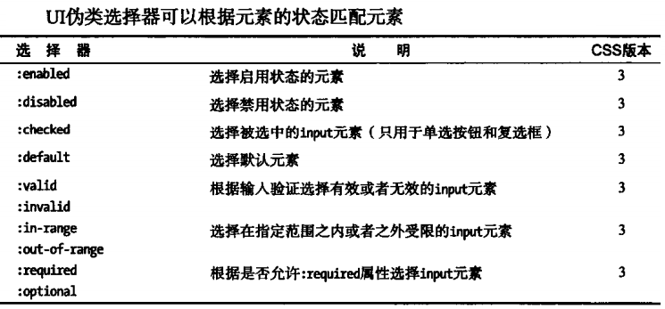

CSS选择器的使用
下面补充一些选择器用法： 后代选择器 vs 子元素选择器： 后代选择器以空格连接，选择的是所有的后代子元素，子元素选择器以大于号（<）连接，只能选择直接子元素。 交集选择器 vs 并集选择器： 交集选择器多个选择器之间无任何符号隔开，用于选择同时满足多个条件的元素； 并集选择器多个选择器之间以逗号（，）连接，用于选择满足任一条件的元素。 伪选择器分为伪元素选择器和伪类选择器。 :before和:after选择器使用案例：CSS计数器  最后一个动态伪类选择器是focus选择器，匹配当前获得焦点的元素。